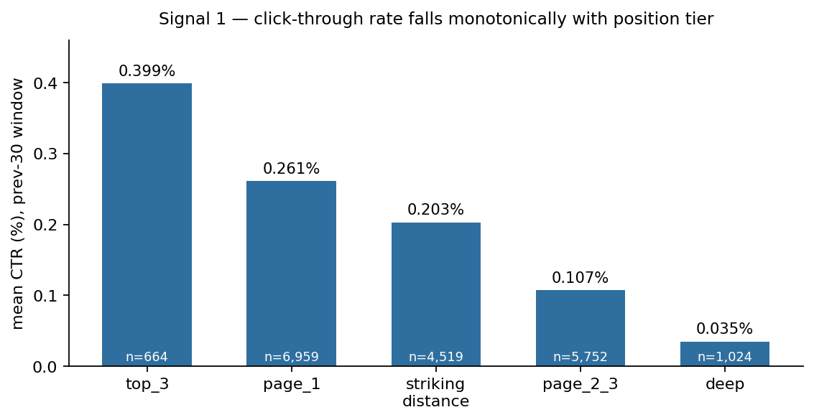
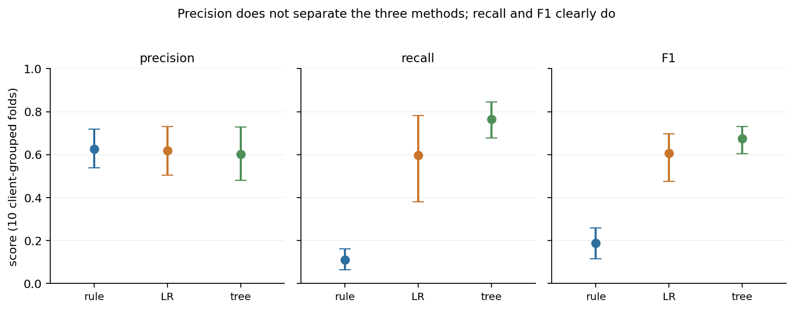
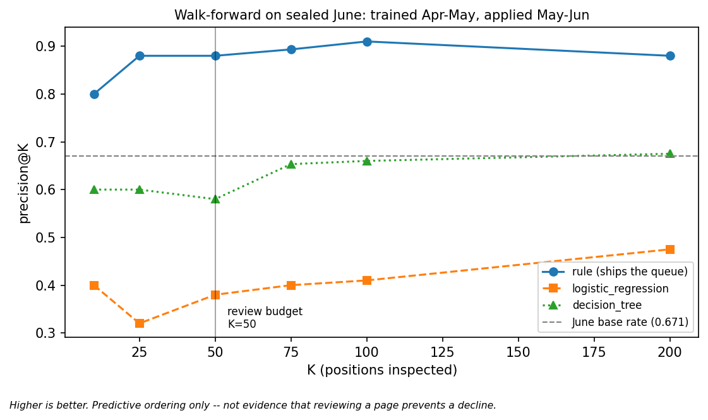
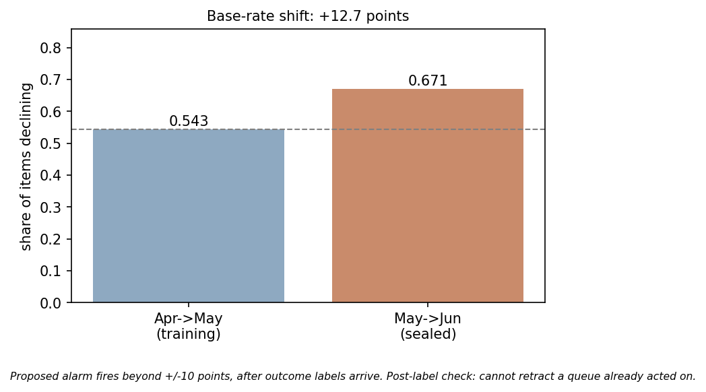

Applied ML · FlyRank ML Internship Capstone
A ranking-signal analysis on a 78.8-million-row pseudonymized production search warehouse — and a test of whether a fitted model orders an editorial review queue better than a transparent rule. Client-grouped cross-validation, a deliberate-leak harness, and one sealed walk-forward month.
Content teams reviewing a large portfolio can open only a few dozen pages a week, so the question that matters is not which pages are declining but which pages to open first. Working from a pseudonymized production warehouse of 78,835,655 daily content-performance rows across 104 clients, I built a page-level frame of 18,918 content items at a fixed decision moment, defined an observed outcome label — impressions in the following 30-day window falling more than 20% below the prior window — and audited which safe, pre-decision signals carry information about it. Position tier and traffic volume were both confirmed as monotonic correlates of click-through rate, while staleness was not supported in this portfolio; I then compared a transparent rule (CTR_BELOW_POSITION_PEERS) against logistic regression and a depth-3 decision tree under client-grouped cross-validation, a deliberate-leak harness, and a single read of a sealed June month. Across 10 client-grouped folds the three methods' precision was statistically indistinguishable (every pairwise 95% CI on the difference includes zero), the models measurably beat the rule on recall and F1, and on the sealed month the rule's queue ordering reached precision@50 of 0.880 against a base rate of 0.671 while both models fell below that base rate. On this evidence the rule ships the queue and the models supply reason codes — a decision-support ordering, observational throughout, with no causal claim that reviewing a page changes its trajectory.
An editor responsible for a multi-client content portfolio has a fixed weekly budget: roughly 50 pages they can actually open, read, and judge. The portfolio has tens of thousands of candidates. The scarce resource is attention, not analysis.
That budget changes what a useful model looks like. A classifier that labels 70% of the portfolio "at risk" is not a decision aid — it hands back a list nobody can work through. What the editor needs is an ordering: the first 50 rows should contain as many genuinely at-risk pages as possible, and each row should carry a reason a human can read and overrule.
This paper asks two questions in sequence. First, the Lane 1 question: which safe content and search signals are actually associated with a page losing visibility? Second, the operational consequence: given those signals, does a fitted model order the review queue better than a transparent hand-written rule?
A false positive spends editor hours on a page that was fine. A false negative lets a page decay unnoticed. Neither is catastrophic, and both are recoverable — which is precisely why this is decision support and not automation. Nothing here should move without a human opening the page.
All work uses the FlyRank internship warehouse release, build v20260703 — a pseudonymized export derived from Google Search Console and Google Analytics 4 data aggregated in BigQuery. Two tables are used:
| Table | Rows | Grain |
|---|---|---|
fact_content_daily_performance | 78,835,655 | report_date × client × content item |
dim_content | 519,606 | one row per content item (static attributes) |
The panel spans 2025-01-27 to 2026-06-30. Two analysis frames were built with identical logic, parameterised only by the as-of date:
| Frame | Feature window | Outcome window | Decision moment | Rows | Clients | Base rate |
|---|---|---|---|---|---|---|
| Training | April 2026 | May 2026 | 2026-05-01 | 18,918 | 27 | 0.543 |
| Sealed walk-forward | May 2026 | June 2026 | 2026-06-01 | 55,904 | 42 | 0.671 |
client_hash_id, content_hash_id, keyword and URL hashes) are used for grouping, joining and splitting only — never as features.provider_used, model_used) is excluded: it describes how a page was produced, not how search or readers behaved, and risks encoding a tooling-vintage artifact.is_published, is_deleted) are excluded as outputs of decisions rather than inputs to them.Every identifier in this study is a pseudonym assigned in the released dataset. No client names, domains, URLs, or raw search queries appear in this paper, in the repository, or in any exported artifact. The ranked queue itself is regenerated on each run and deliberately excluded from version control.
Four assumptions are load-bearing, and each one is a place this work could be wrong:
One row is one content item at one monthly decision point. The label is an observed outcome, not a rule output: a page is labelled declining when impressions in the 30-day window after the decision moment fall more than 20% below the 30-day window before it. Because a second decision date produces a second row for the same page, the true grain is (content item × decision date); with a single decision date per frame this collapses to one row per page.
An earlier iteration of this project used the starter dataset's trend_direction column as a label. That column is computed from the current window and describes a snapshot rather than a future outcome, so it was abandoned in favour of the forward-looking definition above. This distinction is the difference between scoring what already happened and predicting what happens next.
Twenty-three predictors, all observable at the decision moment. This is the single authoritative list; it is exported from the executed pipeline and is identical in every notebook, table and figure in this work.
| Group | n | Features |
|---|---|---|
| Feature-window search & analytics | 7 | prev_30_impressions, prev_30_clicks, prev_30_ctr, prev_30_avg_position, prev_30_sessions, prev_30_engaged_sessions, prev_30_scroll_events |
| Static content attributes | 5 | content_type, word_count_tier, char_count_tier, category_count, backlinks |
| Static keyword attributes | 6 | main_intent, search_volume, competition, cpc, keyword_char_count, keyword_token_count |
| Age measures, computed to the decision moment | 3 | content_age_days_at_decision, days_since_last_update_at_decision, keyword_age_days_at_decision |
| Missingness flags | 2 | no_keyword_data, backlinks_na |
The missingness flags exist because roughly a quarter of items lack keyword data entirely; a blind zero-fill would silently smuggle a category signal into the feature set. Nothing was used in an earlier run and quietly dropped — the list above is the only feature set this paper reports on.
CTR_BELOW_POSITION_PEERS fires when a page passes three eligibility gates — at least 500 impressions, at least 90 days old, and not optimised in the previous 60 days — and records zero clicks in the feature window. Flagged rows are scored by impressions × (peer-tier expected CTR − own CTR), an estimate of the clicks at stake. The peer benchmark is the mean CTR of the page's position tier, learned from training rows only in every fold and from the feature window only in the walk-forward, so the baseline is subject to exactly the same train/test discipline as the models.
Fold base rates in this panel range from 0.255 to 0.931, so how the data is split dominates the result. Three checks were run:
Under a naive random split, 24 of 27 clients appear on both sides and logistic regression reaches precision@10 = 0.900 (AUC 0.668). Under a client-grouped split with zero overlap, the same model on the same data reaches precision@10 = 0.200 (AUC 0.645). The lower number is the one reported everywhere in this paper, because it matches how the tool would actually be used: on a client the model has not seen.
A feature that should never be permitted — the label itself — was deliberately injected into the feature matrix. Held-out AUC moved from 0.645 to 1.000, then the feature was removed and the clean run reported. A checklist can assert "no leakage"; a test that visibly reacts to a known bad input is evidence the boundary works.
All 23 features were tabulated against the decision moment and confirmed knowable before it. The banned set (outcome-window impressions, the label, its percent change, and the rule's own outputs) was asserted absent from the feature matrix. Each of the three population guards was checked to depend only on pre-decision information.
Models: logistic regression (scaled numeric, one-hot categorical) and a decision tree constrained to max_depth=3, min_samples_leaf=200 so its full reasoning fits in eight readable paths. Both use random_state=42. Evaluation is GroupKFold(n_splits=10) on client_hash_id, with 95% confidence intervals from a paired bootstrap of 10,000 resamples over the fold results; F1 intervals are derived from each resample's own precision and recall rather than bootstrapped separately.

| Signal | Associated flag family | Verdict | Basis |
|---|---|---|---|
| CTR vs. position tier | CTR-fix | Confirmed | Monotonic 0.399% → 0.035%, min n=664 |
| CTR vs. traffic volume | Quick-win | Confirmed | Monotonic 0.159% → 0.247%, min n=1,094 |
| CTR vs. staleness | Refresh | Not supported | Non-monotonic; older buckets hold n=131 and n=23 |
The third row is a negative result and is reported as one. The intuition behind a refresh flag — that pages untouched for longer underperform — did not hold in this portfolio: mean CTR rose in the two oldest staleness buckets, and those buckets are far too thin to carry a claim either way. Staleness therefore appears in this work only as an eligibility gate (the 60-day cooldown), never as evidence of risk. This paper makes no decay-or-refresh claim.
A fourth check tested the rule's own assumption rather than a generic signal: is zero-clicks actually anomalous? Among eligible pages it is common — 52.4% portfolio-wide — and its meaning depends sharply on tier. In the sealed month, 0.0% of eligible top-3 pages had zero clicks versus 72.1% of eligible pages beyond position 50 (an April measurement found the same pattern: 9.3% and 67.5%). Zero clicks is a strong anomaly near the top of the results page and close to normal at the bottom.

| Method | Precision | Recall | F1 |
|---|---|---|---|
| Frozen rule | 0.627 [0.538, 0.719] | 0.111 [0.064, 0.162] | 0.189 [0.116, 0.260] |
| Logistic regression | 0.619 [0.505, 0.731] | 0.596 [0.380, 0.783] | 0.607 [0.475, 0.697] |
| Decision tree | 0.603 [0.481, 0.728] | 0.766 [0.677, 0.845] | 0.675 [0.604, 0.732] |
Reading the differences rather than the point estimates, which is the honest test:
| Comparison | Precision | Recall | F1 |
|---|---|---|---|
| tree − rule | [−0.179, 0.129] includes 0 | [0.555, 0.750] | [0.386, 0.577] |
| LR − rule | [−0.152, 0.136] includes 0 | [0.263, 0.678] | [0.270, 0.535] |
Precision is the metric a review queue actually cares about: it answers "when this thing flags a page, how often is the page really at risk?" On that metric no method separates from the others — both confidence intervals on the difference include zero. On recall and F1 the models beat the rule decisively, and those intervals exclude zero. The rule finds few of the declining pages; the ones it does find, it is right about about as often as either model.
Precision@K is the ranked-queue analogue of precision, asking the same "how confident are we when we flag" question restricted to the top K rows the editor will actually see. Across the 10 client-grouped folds the observed mean precision@50 was 0.680 for the rule, 0.644 for logistic regression and 0.642 for the tree, against a fold-mean base rate of 0.562.
This cross-validation precision@50 is tie-order dependent. The rule scores exactly zero for every page it does not flag and the depth-3 tree has only eight possible scores, so both produce large tied blocks; the ranking implementation resolves ties by incoming row order. Re-running the identical computation on the same data in a different row order moves the rule's figure to 0.680 from 0.672, and imposing a deterministic tie-break (score, then impressions, then content hash) yields approximately 0.640 — at which point the three methods sit within 0.004 of one another. The correct reading is that this cross-validation does not separate the three methods either. The figure is reported here because it was the observed value, not because it settles anything.
June 2026 was held sealed through every prior stage of this project and read exactly once, for the walk-forward test below. Models and the rule's benchmark were built on April→May and applied unchanged to May→June — a month they had never seen, on a frame holding 42 clients against the 27 the models were fitted on.

| Ordering | p@10 | p@25 | p@50 | p@100 | p@200 |
|---|---|---|---|---|---|
| Frozen rule (ships the queue) | 0.800 | 0.880 | 0.880 | 0.910 | 0.880 |
| Logistic regression | 0.400 | 0.320 | 0.380 | 0.410 | 0.475 |
| Decision tree | 0.600 | 0.600 | 0.580 | 0.653 | 0.675 |
| June base rate (not a method) | 0.671 | ||||
This walk-forward is more robust to the tie problem than the cross-validation above: the rule genuinely rank-orders 1,549 pages, so the top 200 contains no tie-break filler, and logistic regression produces no ties at all. The tree's column remains tie-sensitive and should be read loosely.
At fixed thresholds on the same sealed month the familiar trade reappears: the rule reaches precision 0.810 at recall 0.033 (F1 0.064), against logistic regression 0.638 / 0.523 / 0.575 and the tree 0.706 / 0.547 / 0.617. High confidence, very low coverage.

One sealed month is real temporal evidence and thin temporal evidence at once. It shows the environment can move materially between consecutive months; it does not establish how often that happens, and a single walk-forward is not a backtest.
Across 10 client-grouped folds on the April→May frame, the precision of the frozen rule, logistic regression and the decision tree was not distinguishable: every pairwise 95% confidence interval on the difference includes zero. Boundary: this is precision at a fixed threshold on one frame; it is not a claim that the methods are equivalent in general.
On the same folds, both models exceeded the rule on recall and F1, with confidence intervals on the differences excluding zero. Boundary: higher coverage, not higher confidence per flag — the rule's low recall (0.111) is a genuine cost wherever coverage matters.
On the sealed June month the rule's ordering achieved precision@50 of 0.880 against a base rate of 0.671, while both models fell below that base rate at every K from 10 to 200. Boundary: one walk-forward month, one portfolio; the tree's figures are tie-sensitive; nothing here is causal.
The validation boundary itself is worth more than the choice of method: the same logistic regression moved from precision@10 = 0.900 to 0.200 when client overlap was removed from the split. Boundary: demonstrated on one model and one frame, and reported as the reason the grouped number is the one used throughout.
Position tier and traffic volume are confirmed monotonic correlates of CTR in this portfolio; staleness is not supported as a risk signal. Boundary: observational association within one pseudonymized portfolio — not a statement about search ranking systems.
Each limitation below attaches to a specific claim above rather than serving as a general disclaimer.
The deliverable is an ordered review queue with a readable reason on every row. The rule orders it; the models ride along as second opinions. Each recommendation names what to do, what not to do, and how to tell whether it worked.
Why: nothing in this evidence shows a model orders the head of the queue better. Precision is statistically indistinguishable across all three methods (Claim 1), the cross-validated ordering comparison does not separate them once ties are handled fairly (§4.3), and on the one sealed month the rule was the only ordering above the base rate (Claim 3). A rule that is a few lines of arithmetic, refreshes its benchmark monthly and emits a human-readable reason is the parsimonious choice when the alternatives have not demonstrated an advantage.
Do not: read this as "the rule is better than machine learning." It is the choice the evidence supports at this budget, on this portfolio, this month.
Measure: precision@50 against the realised base rate each month.
Why: the tree's eight decision paths state which combination of signals placed an item where it is, and the regression gives a graded second opinion. Where the models flag and the rule is silent, that disagreement is information — but it carries no readable reason, so it goes to a person rather than onto the list.
Do not: action a model-only flag automatically; at present that category covers 68% of the portfolio.
Measure: the share of reviewed pages where the reason code matched what the editor actually found.
Why: zero clicks is a strong anomaly for a top-3 page (0.0% of eligible top-3 pages in the sealed month) and close to ordinary beyond position 50 (72.1%). The same flag means different things at different depths.
Do not: exclude deep pages from the queue — they still clear the impression floor and the ordering is the queue's job, not adjudication. Treat the evidence as weaker and lean on the page itself.
Measure: review outcomes split by position tier.
Why: the staleness signal was tested and not supported (Claim 5). Mean CTR did not fall with time since update, and the older buckets are too thin to support a claim either way.
Do not: generalise this to other portfolios — it is a negative result about this data, not about refresh strategy in general.
Measure: re-run the same bucket test on a fuller panel before revisiting.
Why: feature-distribution checks are available before a queue ships; base-rate and ordering checks only exist once outcome labels arrive. June's base rate moved +12.7 points, which a ±10-point threshold would have caught — but only afterwards, so a post-label alarm pauses the next queue rather than retracting one already worked.
Do not: treat any of these thresholds as an implemented system. They are proposed policy, and the age-feature drift readings are largely mechanical.
Measure: whether the proposed thresholds would have fired correctly across additional months.
At a 50-page budget, an observed precision@50 of 0.880 against June's base rate of 0.671 corresponds to roughly 10 additional genuinely-declining pages surfaced per batch ((0.880 − 0.671) × 50 ≈ 10.5). That is arithmetic on one sealed month, not a forecast, and explicitly not a traffic-recovery claim — the queue changes what an editor looks at first, and nothing here measures what happens after they look.
Google Colab (Python 3), with scikit-learn for models and metrics, pandas and numpy for frames, duckdb for warehouse access, and matplotlib for figures. Library versions are those pinned by the Colab image at run time; the executed notebooks in the repository carry their own outputs, so any number below can be checked against the run that produced it. Warehouse access needs a Hugging Face read token supplied through Colab Secrets as HF_TOKEN — no credential appears in any committed file.
random_state=42 on LogisticRegression and DecisionTreeClassifier — controls model fitting.random_state=42 on GroupShuffleSplit — controls which clients land in the held-out split.GroupKFold takes no seed: its folds are deterministic given the group labels.The notebooks are independent and each re-runs from a fresh clone, but the order below reproduces the paper end to end. Only the last one needs the warehouse token; capstone.ipynb runs from committed artifacts alone.
w03_data_contract.ipynb → the frame definition and guardsw04_signal_audit.ipynb → the signal verdicts and Figure 1's numbersw04_baseline_score.ipynb → the frozen rulew05_model.ipynb → the two models and the error analysisw06_validation_audit.ipynb → split comparison, leak harness, Figure 2's confidence intervalsw07_action_playbook.ipynb → sealed-month walk-forward, the queue, Figures 3–4, and w07_playbook_metrics.jsoncapstone.ipynb → rebuilds all four figures into docs/assets/ and verifies the deployed pageThe warehouse is read once per session into a local table; the flyrank-data guidance warns that repeated full scans hit rate limits.
| Result | Produced by |
|---|---|
| Figure 1, signal verdicts (§4.1) | work/notebooks/w04_signal_audit.ipynb |
| Frozen rule, reason codes (§3.3) | work/notebooks/w04_baseline_score.ipynb |
| Feature set, leakage timeline (§3.2, §3.4) | work/notebooks/w03_data_contract.ipynb, w03_feature_leakage_check.ipynb |
| Models, error analysis | work/notebooks/w05_model.ipynb |
| Figure 2, Claims 1–2, split comparison, leak harness (§3.4, §4.2) | work/notebooks/w06_validation_audit.ipynb |
| Figures 3–4, sealed-month walk-forward, queue (§4.3–4.5, §6) | work/notebooks/w07_action_playbook.ipynb |
| Metrics receipts for every number above | work/outputs/w07_playbook_metrics.json |
The sealed-month claim is checkable rather than taken on faith: both the cell that builds the sealed frame and the metrics file it produced are committed. The ranked queue CSV is regenerated on each run and deliberately excluded from version control, so no row-level data enters the repository.
Repository: github.com/vahagngrigoryan2006/flyrank-internship-ml
v20260703 (pseudonymized; derived from Google Search Console and Google Analytics 4 via BigQuery). flyrank.aiLogisticRegression, DecisionTreeClassifier, GroupKFold, GroupShuffleSplit, and the precision/recall/F1 implementations. scikit-learn.orgBuilt on the FlyRank ML Internship dataset — flyrank.ai. The pseudonymized warehouse release (build v20260703) derives from Google Search Console and Google Analytics 4 data aggregated in BigQuery and released for this internship in de-identified form.
Thanks to the FlyRank ML internship programme for the dataset, the weekly sessions on validation design and honest claim language, and the published March 2026 portfolio study that served as the methodology-review exercise in Week 6.